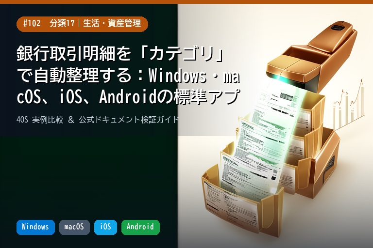

#102｜分類17: 生活・行政手続き・家計・資産管理 2026-11-28

銀行取引明細を「カテゴリ」で自動整理する：Windows・macOS、iOS、Androidの標準アプリ比較
「毎月の銀行明細を見返るだけで、何にいくら使ったか把握したい……」
「領収書の管理や家計簿の入力が面倒で、結局後回しになってしまう……」
そんな悩みを持つ方は非常に多いです。特に近年では電子帳簿保存法への対応など、データの正確な保管と整理が求められる場面が増えています。しかし、いざ「自動でカテゴリ分けしたい」と思っても、スマホやPCの標準アプリだけでどこまでできるのか、戸惑ってしまうことも少なくありません。
この記事では、Windows、macOS、iOS、Androidの4つの主要OSにおいて、「標準機能のみ」を使って銀行明細をどのように取り込み、整理・管理するのかを徹底比較します。
4OS比較早見表
| OS | 推奨される標準ツール | 主なデータ操作方法 | 自動カテゴリ分類 | 特徴・備考 |
|---|---|---|---|---|
| Windows | Excel (Microsoft 365) | CSV/PDFのインポート | 手動ルール定義（関数） | Power Queryによる高度なデータ加工が可能 |
| macOS | Numbers / iCloud Drive | ファイル読み込み・列定義 | 手動分類 | iCloud連携でPC・iPhone間のデータ共有がスムーズ |
| iOS | Wallet / メモ / Files | アプリ内閲覧・手入力 | 非対応 | 分析機能は弱いが、Apple Payとの親和性が高い |
| Android | Google スプレッドシート | Gmail/ブラウザ連携 | 条件付き書式による視認化 | Googleエコシステムでの同期と検索性が強力 |
1. Windows 11 での実例手順
Windows環境では、Excel（Microsoft 365搭載版）が最強の管理ツールとなります。
実装手順
- データ取得: 銀行のWebサイトから取引明細を「CSV形式」または「PDF形式」でダウンロードします。
- インポート: Excelを開き、「ファイル」>「開く」>「PCにある場所」からダウンロードしたファイルを読み込みます。
- データ整形: 「データ」タブの「データの取得（Power Query）」を使用すると、複雑な明細データから必要な項目（日付、金額、内容）だけを抽出できます。
- カテゴリ分類: 支出カテゴリという概念は標準では存在しないため、「支出カテゴリ」という列を新しく作成します。特定のキーワード（例：「コンビニ」「公共料金」）が含まれる場合に自動でカテゴリを割り当てるには、
IF関数やVLOOKUP関数を用いて手動ルールを定義します。
【制限事項】
標準機能のみではAIによる完全な自動カテゴリ割り当ては非対応です。より高度な自動化を求める場合は「Power Automate」の導入や、サードパーティ製のExcelアドインの活用を検討してください。
2. macOS (Sonoma/Sequoia) での実例手順
macOSでは、iCloudと密接に連携するNumbersを活用するのが標準的なアプローチです。
実装手順
- データ取得: ブラウザから銀行明細をダウンロードし、Numbersへドラッグ＆ドロップします。
- 列の定義: スプレッドシートビューで「支出カテゴリ」という新しいカラムを作成します。
- 分類作業: 各行の内容を確認しながら、手動でカテゴリを選択（または入力）します。
【制限事項】
Apple純正の標準機能では、銀行口座と直接連携して自動集計する家計簿アプリのような挙動は提供されていません。「Wallet」アプリで一部の明細確認は可能ですが、高度な分析やカテゴリ分けを行うにはNumbersでの手動管理が基本となります。
3. iOS（iPhone / iPad）での実例手順
iOSでは、「Wallet」「メモ」「ファイル」アプリを組み合わせて運用します。
実装手順
- データ取得: 「Wallet」アプリを開き、「カード」タブから登録した銀行口座の明細を閲覧します（※Apple Pay利用履歴は自動保存されます）。
- 整理・記録: 重要な支出については「メモ」アプリにテキスト形式で入力するか、「ファイル」アプリからNumbers/Excelファイルを開いて直接編集します。
【制限事項】
Appleが提供する標準機能には、家計簿特有の「カテゴリごとの自動集計」や「グラフ表示」といった分析UIは実装されていません。汎用的なツールとしての利用に留まるため、複雑な管理には外部アプリの併用が必要です。
4. Android (Pixel/Galaxy 等) での実例手順
Androidでは、Google スプレッドシートとGmailの連携を最大限に活かします。
実装手順
- データ集約: Gmailに届く銀行の取引通知メールを「ラベル」で整理し、インボックスに集約します。
- スプレッドシート移行: Googleドライブから明細PDFを開き、必要な数値をコピー＆ペーストしてGoogle スプレッドシートへ移行します。
- 視認性の向上: 「条件付き書式」を使い、特定の金額以上の支出や特定のキーワードを含む行に色を付けることで、手動管理の効率を高めます。
【制限事項】
Android標準アプリ群には自動分類AIは搭載されていません。「Google Wallet」での明細閲覧は可能ですが、集計機能はありません。機種により「Samsung Notes」などのプリインストールアプリがあるため、利用するツールを統一することが重要です。
よくあるトラブルと解決チェックリスト
運用中に陥りやすいエラーと、その解決策をまとめました。
-
トラブルA：PDFの取引明細が開けない、文字化けする
- 原因: 銀行側のセキュリティ設定（Protected View）やAdobe Readerの制限。
- 解決策(Windows): 「ファイル」>「オプション」>「全般」で保護されたビューを無効にするか、Edge/Chromeブラウザから直接PDFを開いて内容を確認してください。
- 解決策(他OS): AirDropやGoogleドライブへのアップロード・再ダウンロードを行い、データ転送の過程でエラーが解消されるか確認します。
-
トラブルB：カテゴリごとの集計グラフが出ない
- 原因: データ形式が正しくない、または「ピボットテーブル」を作成していない。
- 解決策: Excel/Numbersの「挿入」>「ピボットテーブル」を選択し、「行」にカテゴリ、「値」に金額を設定してください。
-
トラブルC：スマホとPCでデータが同期しない
- 原因: iCloud、Googleドライブ、OneDriveなどのログインアカウントが混在している。
- 解決策: 設定画面から正しいIDを選択し、同期オプションがオンになっているか確認してください。特にWindowsではOneDriveクライアントの状態をチェックしましょう。
-
トラブルD：領収書の画像が保存できない（または文字が読み取れない）
- 原因: 単なる「写真」として撮影しており、メタデータやスキャン情報が不足している。
- 解決策(iOS): カメラアプリの「メモ」ボタンを使い、公式のスキャン機能を利用してください。
- 解決策(Android): Googleドライブの「＋」>「スキャン」からPDF化して保存します。
まとめ：快適なマルチOS環境を作るポイント
今回の比較で分かった通り、Windows/macOS/iOS/Androidのいずれも、標準機能だけで「高度な自動カテゴリ分類」を行う専用アプリを提供しているわけではありません。基本的にはExcelやGoogleスプレッドシートを「母艦」として使い、手動または簡易的な関数で整理するのが最も確実でコストのかからない方法です。
しかし、より効率的に、あるいは法的に正確に管理を行いたい場合は、以下の周辺機器やツールの導入を検討することで、標準機能の限界を補うことができます。
- ICカードリーダー（e-Tax対応）: 確定申告や公的な手続きを伴う場合、物理的なカード読み取りと連動させることで入力ミスを防げます。
- 会計ソフト・家計管理アプリ: 標準機能での手動分類に限界を感じるなら、銀行APIと連携して自動でカテゴリ分けを行う専用ツールへの移行が最もストレスフリーな解決策です。
- モバイルスキャナー（またはスキャン機能の活用）: 領収書を「ただの写真」ではなく「データとしてのPDF」として保存することで、電子帳簿保存法への対応もスムーズになります。
自分のライフスタイルに合わせて、「標準機能でどこまでやるか」と「どのツールに投資するか」のバランスを見極めることが、快適な資産管理への第一歩です。
参考文献・公式ドキュメント（一次情報ソース）
本記事の手順・仕様は以下の各OSおよびツールの公式ドキュメントに基づいています。OSアップデートによりメニュー名称や挙動が変わる場合があるため、最新仕様の確認にもご活用ください。
- [日本公式（税務）] 電子帳簿保存法関係（領収書・電子取引データの保存要件） - 国税庁
- [Windows] Windows で PC をバックアップおよび復元する - Microsoft サポート
- [macOS / iOS] iPhoneやiPadで書類をスキャンする方法 - Apple サポート (日本)
- [Android] Google ドライブでドキュメントをスキャンする - Google ドライブ ヘルプ